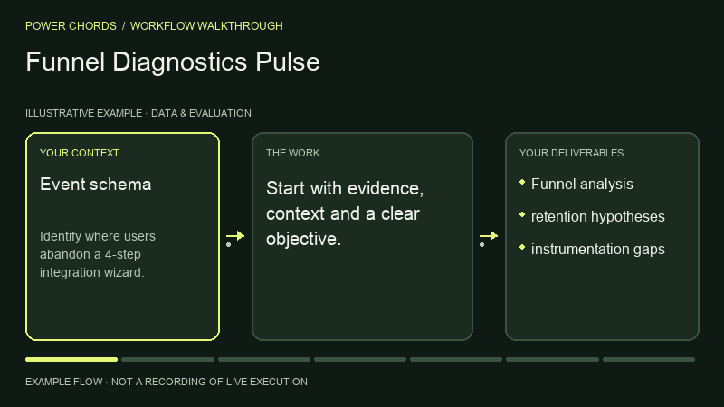

Data & Evaluation · BY POWER CHORDS
Funnel Diagnostics Pulse
Diagnose product funnels.
Your context. A result to review.
- Published by
- Power Chords
- Use with
- Codex workspace
Run in your local Codex workspace, or use the instructions with another equipped agent. Review results before acting. - Bring it to
- Claude Code · Codex · Cursor · Gemini CLI · other agents via Markdown
- Result
- Funnel analysis
SEE THE PROCESS
From context to funnel analysis.
An illustrated example of the workflow.

THE WORK, DEFINED
Inputs and outputs
What you bring
- Event schema
- exposure logs
- time window
- cohorts
What to review
- Funnel analysis
- retention hypotheses
- instrumentation gaps
WORKFLOW DIAGRAM
How Pulse works.
Fill gaps in evidence or access before continuing.
- INPUT
Event schema · exposure logs · time window · cohorts
- STEP 01
Define consistent funnel stages
- STEP 02
Check instrumentation and identity stitching
- STEP 03
Compare drop-offs and cohorts
- STEP 04
Inspect retention and lag effects
- STEP 05
Recommend focused interventions and experiments
- REVIEW
State sampling, attribution and metric limitations
- OUTPUT
Funnel analysis · retention hypotheses · instrumentation gaps
Your approval → Review the work before publishing, sending, deploying or changing external systems.
TRY IT WITH YOUR CONTEXT
One prompt. Your agent.
Add your task and inputs. Your agent needs these instructions and the right tools.
Use Power Chords Funnel Diagnostics Pulse. Identify where users abandon a 4-step integration wizard. Return Funnel analysis, retention hypotheses, instrumentation gaps. Show supporting evidence, assumptions, validation and next actions. Ask for my approval before any external write or publication.
FINISH WITH CONFIDENCE
What a good result needs.
- The outputs match your brief.
- Claims have sources. Assumptions and gaps are labelled.
- State sampling, attribution and metric limitations.
- Tool results come from real execution.